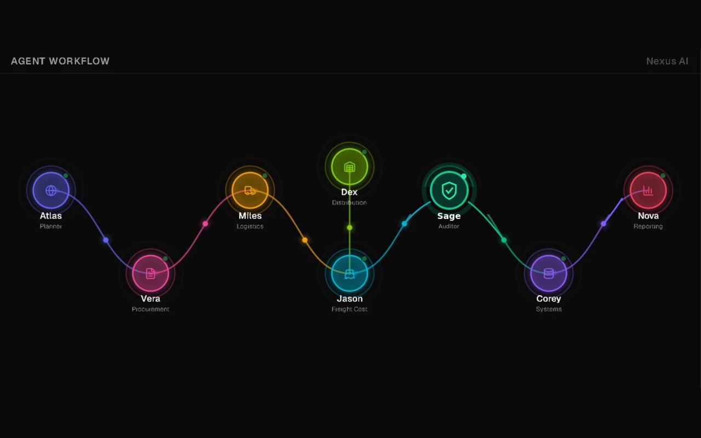
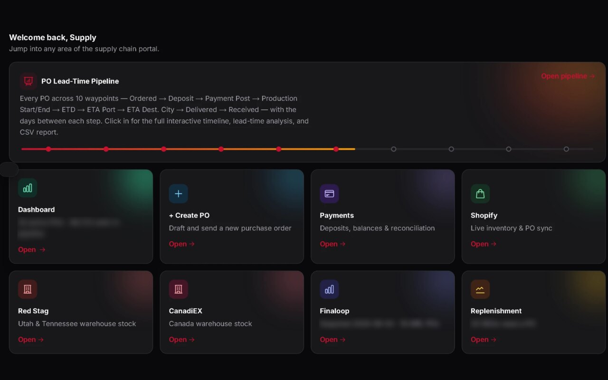
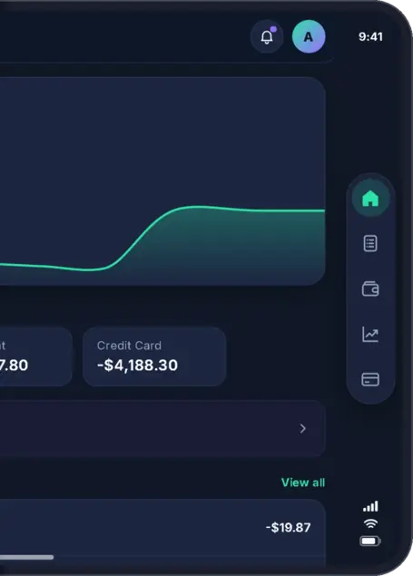
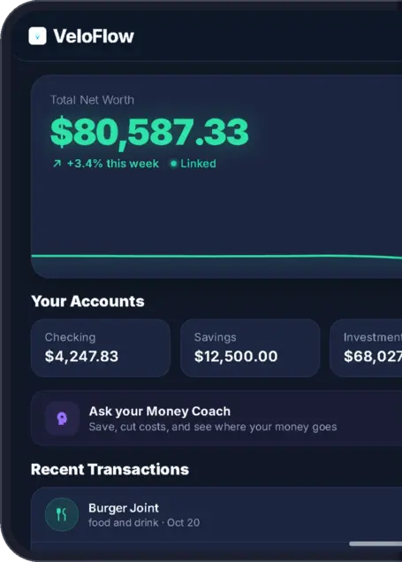
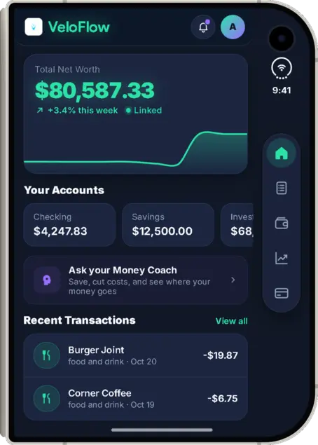
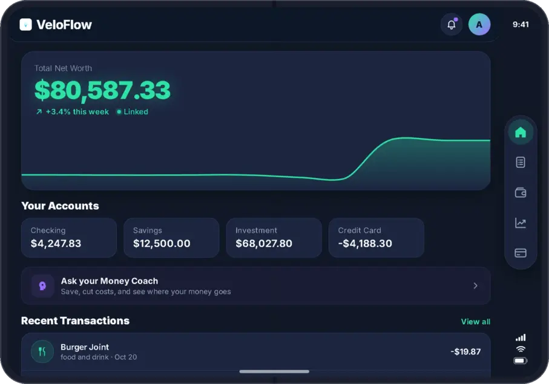
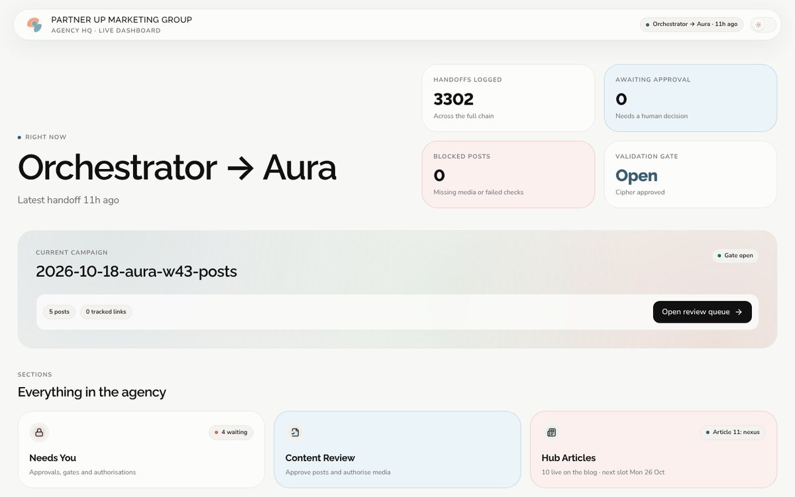
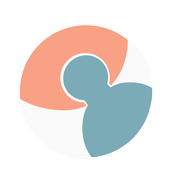

On a top product: 295 days down to 29.


Nathan Knott · Supply Chain & Operations
Ask more of your supply chain.
19 years leading teams, 5 running distribution center operations and supply chain. I also build software with AI: a supply chain portal run by AI agents, a finance app and a marketing agency.
Highlights
Associates led at a Target distribution center.
Supply chain run end to end as the company grew.
At Target DC, plus +16% sortation throughput.
Automatic checks that caught zero-revenue errors.
Units, turned around from negative inventory.
In management roles.
Projects I built
Three working products I designed and built myself with AI coding tools, starting with the one I built to run a real supply chain.
Internal tools · a $12.7M consumer brand
Supply Chain Portal & Supply Chain OS
Two connected apps I built. The portal runs the day-to-day records: purchase orders, payments and warehouse stock. Supply Chain OS puts a team of 8 AI agents on top that watch that data, flag problems and write the reports.
The problem it solves
Orders, shipments, payments and documents lived across spreadsheets, inboxes and five different systems. Problems, like an order priced at zero or a late shipment, were found after the fact.
The portal
- Tracks every purchase order through 10 steps, from ordered to received, with the days between each step.
- Separate logins for admin, suppliers and the warehouse. A new PO shows up in the supplier's portal right away.
- Live stock from two 3PL warehouses, deposits and balances per PO, and checks against Shopify and the accounting system.
- A 12-month demand forecast with order-by dates from lead times, and reorder suggestions from sales speed.
- 9 outside systems connected, including Shopify, both warehouses, accounting, Google and Slack.
Supply Chain OS, the AI layer
- 8 AI agents, each owning one job: planning, procurement, logistics, freight cost, audit, systems, reporting and distribution.
- Every portal event, like a supplier uploading an invoice, becomes a handoff between agents in a live feed.
- One-click sweep: every agent audits the data and ranks what it finds as critical or warning, then posts to Slack.
- 7 AI-built reports with charts and PDF export, including container sizing, landed cost per unit and freight invoices.
- Voice: type a scenario and the agents talk it through out loud, using live data.
- Automatic checks on 920+ orders caught zero-revenue errors before they shipped.
Next.jsSupabaseAI agentsGemini APIShopify APIVoiceVercel
Personal finance app · velo-flow.io · real app screens, demo data
VeloFlow
A money tracker on the web and Google Play. Connect your bank accounts and see where your money goes, in one place.
The problem it solves
Most people can't see their whole financial picture without logging into several banks or keeping a spreadsheet up to date. So they stop tracking.
What it does
- Live bank data through Plaid with read-only access. It never moves money or gives financial advice.
- An AI money coach answers questions about your own spending.
- Android app on Google Play, paid plans through Stripe.
- A secure data feed lets the AI agency read live product numbers without any user's personal data.
Next.jsPostgreSQLPlaidStripeAndroid





AI marketing agency · partnerupmarketinggroup.io

Partner Up Marketing AgencyA marketing team of 11 AI agents. Each has one job, and work moves station to station with checks along the way, like a well-run warehouse.
The problem it solves
A small business can't afford a marketing staff that posts every day and checks its own work. Most AI tools post fast but don't check facts, costs or approvals.
What it does
- Plans, writes and schedules posts across 5 social platforms every day.
- Nothing goes out without a separate fact-check, and a person taps the final publish.
- A weekly spending cap on AI video, a cost log, and a record of every handoff.
- Rebuilt and launched the company website with booking, a store and plans, plus a live dashboard.
Claude AI agentsNext.jsSupabaseWix Headless200+ scripts18 test suites
Experience
Most recent first.
Oct 2025 – Aug 2026 · Scottsdale, AZ
Senior Supply Chain Manager
Mito Red Light
- Ran the full supply chain while the company grew to $12.7M in revenue.
- Cut out-of-stock days by up to 90%. The MITOPRO1500+ V2 went from 295 days to 29.
- Turned negative inventory into 797 units on hand.
- Built an AI supply chain portal for tracking, alerts, missing documents and order checks.
- Automatic checks on 920+ orders caught zero-revenue errors.
- Supplier negotiation, 3PL, freight, customs and tariffs; better trailer fill; executive reporting.
−90% stockout days797 units recovered920+ orders audited
Oct 2021 – Oct 2025 · Phoenix, AZ
Operations Manager
Target Distribution Center
- Led up to 130 associates, including 15 Level 4 ICQA and quality team members.
- 100% safety and inventory compliance; engagement score of 92.
- Ran 4 HQ pilot programs: Packing Kaizen, Modern Load and Ship, Beauty Tail Load and Pathfinder.
- Productivity +36%, sortation throughput +16%, receiving efficiency +10%, and +7% from Kaizen.
- Built dashboards to track daily performance.
Dock accuracy 1.4% (goal 1.7%)Damage 0.17%Inbound 10.48 (goal 11.0)Outbound 19.63 (goal 20.0)
Jan 2018 – Oct 2021 · Scottsdale, AZ
Marketing and Communications Manager
Discount Tire
- Led a team of 10.
- Built sales and profit forecasts.
Apr 2007 – Mar 2018 · Riverside County, CA
Assistant Manager
Discount Tire
- Raised customer satisfaction 40%, to 92%.
- Beat sales goals by up to 60%.
Skills
Supply chain
- Inventory planning
- Stockout reduction
- Supplier negotiation
- 3PL, freight, customs
- Tariffs
Operations
- DC inbound and outbound flow
- ICQA and quality
- Safety compliance
- Kaizen and Lean
- Pilot programs
Leadership
- Teams up to 130
- Coaching leads
- Executive reporting
- Sales and profit forecasting
- Customer experience
AI and technical
- AI agents (Claude)
- Gemini API
- Next.js, Supabase, PostgreSQL
- Dashboards
- Automated order checks
Six Sigma Yellow Belt
Certification
Let's build a better-run operation.
I've cut stockout days by up to 90%, led 130 people through peak season, and built AI tools that catch costly errors before they ship. Now I want to do that for your team, in a supply chain or operations leadership role.
Nathan.knott@outlook.com